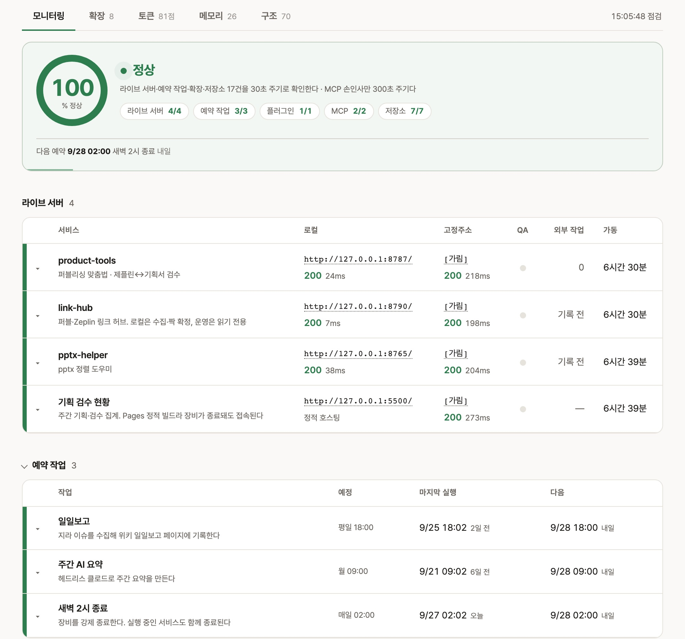

시안과 기획서 대조는 여섯 단계로 진행한다
케이스 스터디에서 말한 자동 대조는 실제로 어떤 순서로 돌아가나요?
Zeplin에 올라온 디자인 시안의 문구가 Figma 기획서와 같은지 확인하는 검수예요. 사내 화면 검사 도구 product-tools가 두 서비스 API에서 화면의 텍스트와 좌표를 직접 받아 대조까지 마쳐요. 사람은 결과를 보고 제외할지만 정하면 돼요. 단계마다 기준값을 숫자로 정해 두고, 회차가 바뀌어도 같은 결과가 나오게 했어요.
| 단계 | 하는 일 | 기준 |
|---|---|---|
| 01 수집 | 두 서비스 API에서 텍스트·좌표·노드 ID를 받음 | 화면 이미지는 1440px로 줄여 리포트에 넣음 |
| 02 잡음 제거 | 한 글자·기호, 상태 라벨, 예시 데이터를 비교 대상에서 뺌 | hover·disabled·pc·mobile 같은 상태 표기 19종 |
| 03 조각 병합 | 강조 때문에 여러 노드로 쪼개진 문구를 한 문장으로 합침 | 같은 줄 오차 12px, 간격 24px 이내 |
| 04 정규화 | 공백을 지우고 같은 뜻의 기호를 한 글자로 모음 | 가운뎃점 U+00B7 = U+30FB, 머리표 Q.·A. 제거 |
| 05 순서 대조 | 읽는 순서대로 비교해 변경·누락·추가·순서 변경으로 나눔 | 닮은 정도 0.5 이상이면 문구 변경으로 짝지음 |
| 06 오탐 제외 | 구조·표기 차이로 잘못 잡힌 항목을 제외하고 로그를 남김 | 아래 규칙 8개 |
오탐 제외 규칙 8개는 구체적으로 무엇인가요?
모두 실제 화면에서 잘못 잡힌 항목을 세어 보고 만든 규칙이에요. 뺄 문구를 목록으로 적지 않고, 조건을 정해 그 조건에 맞는 항목만 뺐어요. 예를 들어 푸터는 기획서에 푸터가 아예 없을 때만 빼고, 기획서에 있으면 평소처럼 비교해요.
| 규칙 | 예 | 실측 |
|---|---|---|
| 줄·노드를 다르게 나눈 것 | 기획서 한 줄이 시안의 긴 노드 안에 그대로 있음. 짧은 쪽이 긴 쪽 길이의 60% 미만일 때만 뺌 | 75~96건 |
| 표·목업의 예시 데이터 | order_20240701.xlsx, ORD-2407-001, (주)가나다, 총 2건 | 후보 118건 중 19건 |
| 시안에만 있는 짧은 라벨 | 표 컬럼명·버튼·내비. 12자 이하이고 종결어미가 없을 때만 | 36건 |
| 시안 푸터 | 이용약관, 개인정보처리방침, 카피라이트. 기획서에 푸터가 없을 때만 | 7건 |
| 줄바꿈만 다른 것 | 리포트 카드에서 시안과 기획서 문구가 똑같아 보여 무엇이 다른지 알 수 없던 항목 | 31건 |
| FAQ 머리표 | 시안에만 붙는 Q.·A.를 대조와 표시 양쪽에서 뗌 | 5건 |
| 전각·반각 기호 | 재고평가·수불부와 재고평가・수불부를 같은 문구로 봄 | |
| 쉼표·마침표만 다른 것 | 문구 변경 대신 표기 통일 그룹으로 분류 |
같은 화면에서 텍스트 515개를 받으면 잡음을 걸러 482개가 남고, 차이 53건은 같은 차이끼리 묶어 카드 27장으로 보여 줘요. 전면 리디자인처럼 차이가 688건 나와도 카드는 72장이에요.
일부러 잡지 않는 차이도 있나요?
색·크기·굵기는 대조하지 않아요. 전면 리디자인에서는 거의 모든 값이 달라져 항목이 수백 건으로 늘었고, 남는 것도 대부분 의도한 변경이었어요. 강조가 실제로 사라진 경우는 다음 장의 AI 판단 단계에서 화면 이미지를 비교해 찾아요.
규칙 8개로 시작한 뒤 표기 방식 차이 두 가지를 더 뺐어요. 가운뎃점·붙임표 앞뒤를 띄우는지는 취향이라 비교하지 않고, 기획서가 괄호로 적은 말을 시안이 뱃지로 뺀 경우도 같은 문구로 봐요.
빼낸 항목은 어떻게 확인하나요?
회차마다 규칙별로 몇 건을 왜 뺐는지 로그에 남겨요. 리포트를 받은 사람이 항목을 제외하면 카드가 사라지고 그룹 건수도 같이 줄어요. 제외한 항목을 되살릴 때는 '제외 초기화' 버튼 하나로 되돌려요.
· 줄을 다르게 나눈 것 N건 제외 (문구는 상대 화면에 그대로 있음)
· 시안 푸터 N건 제외 (기획서에 푸터가 없어 비교 대상이 아님)
· 시안에만 있는 짧은 라벨 N건 제외 (표 컬럼명·예시 값·버튼)
· 줄바꿈만 다른 것 N건 제외 (글자·띄어쓰기는 같음)
비슷한 대조를 직접 만든다면 무엇부터 챙기면 되나요?
규칙을 하나 넣을 때마다 로그에 남은 규칙별 건수를 넣기 전과 비교하세요. 규칙이 너무 많이 걸러도 건수가 없으면 알아챌 방법이 없어요. 아래는 만들면서 실제로 바꾼 설정이에요.
| 항목 | 처음 설정 | 바꾼 설정과 이유 |
|---|---|---|
| 화면 이미지 | 960px, 품질 78 | 1440px, 품질 85. 표시 폭보다 작아서 글자가 흐렸음 |
| 시안 이미지 | Zeplin 1024px 썸네일 | Zeplin 원본. 더 선명하고 받는 시간도 3.7초에서 1.5초로 줄었음 |
| 수집 순서 | 시안과 기획서를 차례로 받음 | 동시에 받고 이미지는 받는 즉시 줄임. 22초에서 12초로 줄었음 |
| 순서 변경 항목 | 리포트에 그룹으로 표시 | 리포트에서는 빼고 대조에서는 계속 잡음. 안 잡으면 같은 문구가 누락 1건과 추가 1건으로 나뉘어 항목이 늘어남 |
| 진행 표시 | 돌아가는 원 하나 | 단계, 진행률, 경과 시간. 1분이 넘는 검사에서 멈춘 것과 구분되지 않았음 |
리포트를 다른 팀에 넘긴다면 그룹 이름과 배지도 받는 팀 기준으로 지어 두세요. 여기서는 그룹 이름의 주어를 시안으로 두고('시안에 빠진 문구', '시안에만 있는 문구'), 배지는 누가 할 일인지로 나눴어요('디자인 반영', '기획 확인', '표기 통일').
중요도 판단은 AI에게, 실패해도 검수는 멈추지 않게
기계 대조 뒤에 AI 판단을 한 단계 더 붙인 이유가 있나요?
기계 대조로는 글자 차이를 빠짐없이 찾을 수 있지만, 어떤 항목이 중요한지는 가릴 수 없어요. 손으로 검수할 때 실제로 잡던 것은 의도한 리디자인이 아닌 실수, 총 5건이라고 적었는데 행은 7개인 수치 모순, 게시 전에 승인이 필요한 타사 로고 같은 것이었어요.
그래서 대조 후보와 두 화면 이미지를 제 맥에서 실행되는 Claude Code에 넘겨요. 사소한 항목은 빼고, 남긴 항목에는 심각도와 이유를 한 줄로 받아요. AI가 이미지에서 새로 찾은 항목은 리포트에 별도 그룹으로 추가돼요.
AI가 틀리거나 응답하지 않으면 어떻게 되나요?
판단 단계는 결과에 덧붙이는 단계로만 뒀어요. AI가 없거나 시간이 초과되거나 답 형식이 깨지면 기계 대조 결과를 그대로 써요. AI 때문에 검수가 멈추는 일은 없게 했어요.
정확한 좌표가 필요한 일은 AI에게 맡기지 않았어요. AI가 이미지로 판단한 항목은 좌표가 대략적이어서 리포트 화면에 차이 위치를 찍는 핀이 엉뚱한 곳에 찍혔어요. 기획서에 남은 빨간 검토 메모는 글자색 값으로 직접 찾고, 이미지 판단 항목에는 핀을 붙이지 않아요.
- 이미지 판단은 게시 전에 걸러야 하는 상표·검토 표시·수치 모순만 보게 범위를 좁혔습니다
- 판단 결과는 문구 쌍과 화면 내용으로 캐시합니다. 회차마다 바뀌는 좌표·번호는 키에서 뺐습니다
- 판단 모델은 환경변수 하나로 바꿀 수 있게 두었습니다
판단 단계는 얼마나 걸리나요?
처음에는 모든 후보에 이유를 쓰게 해서 답이 길었어요. 버릴 항목은 ID만, 남길 항목에만 한 줄 이유를 쓰게 바꾸자 시간과 답 길이가 같이 줄었고 걸러내는 기준도 더 엄격해졌어요.
| 전 | 후 | |
|---|---|---|
| 판단 시간 | 125초 | 89초 |
| 답 길이 | 4,244자 | 700자 |
| 후보 30건 중 남긴 항목 | 11건 | 7건 |
판단 단계를 직접 붙인다면 어떤 값을 설정해 두나요?
판단 단계는 맥에 설치된 Claude Code를 claude -p(질문 하나를 보내고 답만 받는 실행 방식)로 부르고 답을 JSON으로 받아요. 그래서 API 키를 따로 두지 않아요. 바꿀 만한 값은 모두 환경변수로 빼 뒀어요.
| 환경변수 | 하는 일 | 기본값 |
|---|---|---|
| PT_CLAUDE_BIN | 부를 claude 실행 파일 경로 | Homebrew 설치 경로 |
| PT_QC_JUDGE_MODEL | 글자 후보를 걸러낼 모델 | 비워 두면 Claude Code 기본 모델 |
| PT_QC_JUDGE_IMAGE_MODEL | 두 화면 이미지를 비교할 모델 | 비워 두면 Claude Code 기본 모델 |
| PT_QC_JUDGE_TIMEOUT | 한 번 호출의 제한 시간 | 150초 |
| PT_QC_JUDGE_CACHE | 판단 결과 캐시 파일 위치 | app/reports/qc-judge-cache.json |
- 후보는 30건씩 묶어 보냅니다. 한 번에 보내는 후보가 많으면 프롬프트가 커져서 제한 시간을 넘겼습니다
- 후보를 15건씩 더 잘게 나눠도 시간은 줄지 않았습니다(203초, 211초). 호출마다 드는 고정 시간이 커서 묶음 크기보다 답 길이를 줄이는 쪽이 효과가 있었습니다
- 빠른 모델(haiku)은 68~74초에 끝났지만 후보 30건 중 20~29건을 그대로 남겼습니다. 모델을 바꿀 때는 걸린 시간과 남긴 건수를 같이 잽니다
- 캐시 키에는 문구 쌍과 화면 파일 내용만 들어가고 프롬프트와 모델은 들어가지 않습니다. 프롬프트나 모델을 바꾼 뒤 새 기준으로 다시 판단하려면 캐시 파일을 지우거나 다른 경로를 지정합니다
세무달력 2.9분과 검수 22개의 내역
2.9분은 어떻게 나온 숫자인가요?
세무달력은 매달 그달 세무 일정을 달력 이미지로 만들어 발송하는 안내물이에요. 2.9분은 10월분을 만들 때 잰 174초예요. 원본 문서에서 그달 일정을 뽑고, 직전 달 프레임을 복제해 Figma에 그리고, 월 테마 이미지를 만들고, 원본과 대조하는 네 단계를 합친 시간이에요.
스크립트를 만들기 전에는 AI가 Figma를 열두 번 나눠 고쳤고, 그렇게 13분이 걸렸어요. 그중 6분이 Figma를 오가는 시간이었어요. 빌드 스크립트 하나로 그 왕복을 한 번으로 줄였어요. 복제 원본을 직전 달로 정한 것도 실측에서 나왔어요. 기준으로 쓰던 7월 프레임에는 이후 달에 붙는 홍보 배너가 없었거든요.
자동으로 확인하는 검수 22개는 무엇인가요?
발송본은 퍼블리셔가 달력 이미지에 링크를 걸어 만든 웹 페이지이고, 일정 항목마다 영상 링크가 붙어요. 검수 22개는 이 페이지의 링크와 항목을 원본과 맞춰 보는 항목이에요. 원본 대조를 빼고 돌리면 링크가 열리는지만 확인해서, 항목에 엉뚱한 영상이 붙어 있어도 통과해요. 그래서 원본 기준 파일을 빼고는 실행하지 않게 했어요.
| 구분 | 확인하는 것 | 개수 |
|---|---|---|
| 월 이동 링크 | 이전·다음 달로 가는 링크가 맞는 달을 가리키는지 | 1 |
| 영상 링크 | 영상 링크가 실제로 열리는지 | 10 |
| 원본 대조 | 항목별 영상 9건, 항목 개수, 가이드·배너 분류 | 11 |
검수기를 만들며 막혔던 곳이 있나요?
발송본 페이지에 링크 태그가 하나도 없었어요. 페이지 전체가 이미지 한 장과 이미지맵이라, 링크 태그만 찾던 검사기는 아무것도 못 찾고 경고만 냈어요. 오랫동안 그 상태로 통과하고 있었어요.
- 이미지맵의 영역 태그까지 찾고, 글자가 없는 태그라 대체 텍스트에서 문구를 읽습니다
- 월 표기가 '8월 일정 보기'처럼 한 자리일 때도 잡히게 규칙을 고쳤습니다
- 링크가 회사 도메인이면 영상 링크로 판정하던 규칙을 없앴습니다. 이용가이드 5개가 영상으로 잡히고 있었습니다
검수에 브라우저를 쓰지 않는 이유가 있나요?
처음에는 브라우저를 띄워 화면을 확인했는데, 나중에 브라우저 단계를 뺐어요. 대상이 스크립트 없는 6KB짜리 정적 HTML이라 파일을 받아 태그만 읽어도 결과가 한 글자도 다르지 않았어요. 발송본, 로컬 사본, 샘플 세 가지로 통과 항목 목록까지 같은지 확인했어요.
이유는 속도보다 배포였어요. 링크 한 줄로 설치하는 도구에 브라우저 엔진을 같이 보낼 수는 없어서, 지금은 추가로 설치할 것이 없어요. 실패했을 때 남기던 화면 캡처 대신 문제가 된 태그 원문을 리포트에 실어요.
퍼블리싱 요청 쪽지도 커맨드로 만들었나요?
쪽지는 퍼블리셔에게 그달 발송본 제작을 요청하는 메시지예요. 원본 표의 영상 주소를 눈이나 문자 인식으로 옮기면 대문자 I, 소문자 l, 숫자 1이 섞여 없는 주소가 만들어져요. 9월분에서 실제로 3개가 그랬어요. 그래서 쪽지를 만들기 전에 시안과 항목을 대조하고, 영상 링크가 실제로 재생되는지 확인하는 단계를 커맨드에 넣었어요. 쪽지는 본문만 만들어 보여 주고 보내는 것은 사람이 해요.
디자인 파일에 달력을 그리는 스크립트는 어디서 막혔나요?
13분이 걸리던 때는 원본 문서를 브라우저로 열다가 로그인 화면에 막혀 50초를 쓰기도 했어요. 지금은 그룹웨어 문서를 읽는 MCP로 본문 HTML을 바로 받아요. 자격증명은 MCP 서버에 있어서 스크립트에는 로그인 절차가 없어요.
| 구간 | 증상과 원인 | 대응 |
|---|---|---|
| 원본 표 읽기 | 월·날짜 칸이 rowspan으로 합쳐져 행마다 칸 수가 6·5·3개로 다름 | 빈 칸은 직전 행 값을 이어받아 읽음. 문서에 표가 여러 개라 '세무일정'과 '구분'이 함께 있는 표만 고름 |
| 노드 복제 | appendChild: The node with id "…" does not exist 오류로 멈춤. clone()한 노드를 본으로 두고 원래 칸을 비우자 이후 복제가 삭제된 노드를 돌려줌 | 본을 두지 않고 있는 노드는 재사용, 없는 노드만 새로 만듦 |
| 6주인 달 | 프레임이 5행 기준이라 스크립트가 멈춤 | 프레임 높이는 디자인 결정이라 자동으로 늘리지 않고 사람에게 넘김 |
| 마감 바 간격 | 9월 프레임을 손으로 배치해 간격이 43·49·36px로 제각각 | 행 위쪽에서 36px 아래에 첫 바를 두고 23px 간격으로 통일 |
색·타이포·그리드·검증 규칙은 Figma 프레임에서 md 파일로 옮겼어요. 규칙이 프레임에만 있을 때는 규칙을 읽는 데도 Figma를 오가야 했어요. md로 옮긴 뒤로는 첫 단계가 Figma 왕복 없이 끝나고, 규칙을 고친 이력이 git에 남아요.
스크립트를 고친 뒤에는 한 달 프레임을 지우고 새로 만들어 확인했어요. 스펙에 적은 정합성 검증 다섯 항목을 다시 통과하는지, 테마 이미지 해시가 전과 같은지를 확인해요.
저장소 하나로 설치하고 세션을 시작할 때 갱신한다
케이스 스터디에서 말한 세무달력 폴더는 실제로 어떻게 생겼나요?
Claude Code 플러그인 형식이에요. 저장소 하나가 플러그인이면서 설치 목록 역할도 같이 해요. Figma 연결 설정도 같이 들어 있어서, 받는 사람은 따로 등록하지 않고 Figma 로그인만 하면 돼요.
├─ .claude-plugin/ # 플러그인 정보와 설치 목록, 버전
├─ .mcp.json # Figma 연결 설정
├─ skills/month/SKILL.md # 월 달력 생성·수정
├─ skills/qa/SKILL.md # 발송본 검수
├─ commands/mg.md # 퍼블리싱 요청 쪽지
├─ hooks/hooks.json # 세션 시작 시 자동 갱신
├─ references/ # 작성 스펙 · 원본 문서 · 영상 표기 · Figma 구조 · 월 테마, 월별 확정 데이터
└─ scripts/ # 원본 추출 · Figma 빌드 · 테마 이미지 · 검수 · 배포
| 종류 | 누가 부르나 | 이 폴더의 예 |
|---|---|---|
| 스킬 | 요청이 설명과 맞으면 Claude가 찾아 읽음 | '9월 달력 만들어', '핀 순서 바꿔' 같은 말에 month가 열림 |
| 커맨드 | 사람이 이름을 직접 입력 | /tip:mg 10 |
| 훅 | 정해진 상황에 자동 실행 | 세션을 시작하면 갱신 확인 스크립트 실행 |
팀원은 어떻게 설치하나요?
경로가 두 가지예요. 저장소 권한이 있으면 명령 두 줄로 설치 목록을 등록하고 설치해요. 권한이 없는 팀원은 포털 카드에 적힌 한 줄을 복사해 실행하면 같은 결과가 나와요.

설치한 뒤 새 버전은 어떻게 받나요?
한 줄로 설치하면 설치 목록이 로컬 폴더라서, 목록을 갱신해도 새 버전이 있는지 알 방법이 없었어요. 그래서 세션을 시작할 때 실행되는 훅으로 새 버전을 확인해요. 세션 시작이 늦어지지 않도록 훅은 버전 확인을 백그라운드로 넘기고 바로 종료돼요. 받은 새 버전은 다음 세션부터 적용돼요. GitHub 저장소로 설치하면 배포 키가 없어서 훅이 이 확인을 건너뛰니, /plugin update로 직접 갱신해요.
배포하면서 특히 조심한 것은 무엇인가요?
배포 파일 하나가 팀원 맥마다 설치되니, 한 번 잘못 나가면 되돌리기 어려웠어요. 그래서 아래 다섯 가지를 배포 절차에 넣어 뒀어요.
- 다운로드 키는 배포 파일에 넣지 않습니다. 넣으면 사본마다 키가 따라가 회수할 수 없어서, 설치할 때 받은 키는 그 맥에만 저장하고 다른 사용자가 읽지 못하게 권한을 막습니다
- 버전 조회가 404면 갱신 없음으로 읽지 않고, 파일을 받아 안에서 버전을 확인합니다. 404를 갱신 없음으로 읽으면 영영 갱신되지 않습니다
- plugin.json과 marketplace.json의 버전을 같이 올립니다. 내용만 바뀌고 버전이 같으면 이미 설치한 사람에게 갱신이 가지 않습니다
- 올린 파일은 다시 받아 해시를 비교하고, 되돌릴 때는 같은 명령에 이전 커밋을 넘깁니다
- 배포 파일 경로에 한글을 쓰지 않습니다. macOS 압축 해제에서 설치가 통째로 실패했습니다
플러그인을 직접 만들어 배포한다면 어디서 걸리나요?
처음 만들 때 놓치기 쉬운 동작이 몇 가지 있어요. 모두 이 플러그인을 배포하면서 README에 적어 둔 것이에요.
- 마켓플레이스로 설치하면 스킬 이름 앞에 플러그인 이름이 붙습니다. /tip:month로 불러야 하고 /month는 동작하지 않습니다. 저장소를 clone 해서 프로젝트 스킬로 쓸 때만 /month가 됩니다
- 플러그인으로 설치하면 CLAUDE.md를 읽지 않습니다. 지켜야 할 규칙은 스킬 본문에 적습니다
- ${CLAUDE_PLUGIN_ROOT}는 스킬·에이전트 본문에서만 설치 경로로 바뀝니다. 스킬이 Read로 여는 참고 파일 안에서는 그대로 남으니 상대 경로로 적습니다
- 저장소 루트의 agents/는 예약된 폴더 이름이라 지침 파일을 두지 않습니다
- 사용자에게 확인받은 값은 설치 폴더에 쓰지 않고 ~/.claude/tip/에 저장합니다. 설치 폴더는 갱신할 때 통째로 덮입니다
- 배포 서버에 올릴 때 플러그인 이름을 빠뜨리면 같은 서버에 있는 다른 플러그인을 덮어씁니다. 업로드 이름 하나가 마켓플레이스 하나입니다
갱신이 제대로 됐는지는 어떻게 확인하나요?
팀원 맥에서는 갱신 상태 파일이 한 폴더에 모여 있어서 거기부터 확인해요.
├─ update-checked # 마지막으로 버전을 확인한 시각
├─ update-notice # 다음 세션에 띄울 한 줄
├─ update.log # 갱신 기록
├─ years.md # 사용자가 확인해 준 연도별 원본 문서
└─ dist.env # 다운로드 키, 권한 600
갱신이 한 번도 일어나지 않으면 dist.env가 있는지부터 확인해요. 키가 없으면 훅은 오류 없이 갱신만 건너뛰어요. 설치 한 줄을 거치지 않고 zip을 손으로 받아 설치했을 때 이렇게 돼요.
배포하는 쪽에서는 올라간 zip이 어느 커밋인지 확인해요. 배포본을 git archive로 만들어서 zip 주석에 커밋 SHA가 남아 있고, 압축을 풀지 않고 그 40자만 읽으면 돼요. main이 zip보다 앞서 있어도 문서만 바뀐 커밋이면 다시 배포하지 않아요. 5장의 status-board도 두 쪽의 버전이 다를 때만 경고를 띄워요.
출근부터 퇴근까지 켜 두는 status-board
점검 화면은 언제 여나요?
status-board는 제 맥에서 도는 도구와 예약 작업, 팀에 공유한 도구가 정상인지 한 화면에 모아 보는 점검 페이지예요. 따로 열지 않아요. 맥을 켜면 status-board 서버가 실행되고, 서버가 응답하는 것을 확인한 뒤 크롬 창까지 자동으로 열려요. 업무를 시작할 때 이미 떠 있고, 퇴근할 때까지 탭 하나로 켜 둬요.
처음에는 그날 첫 AI 세션을 열 때 같이 띄웠어요. 그러면 터미널을 열기 전까지 점검 화면이 없어서, 부팅할 때 켜지도록 옮겼어요. 만든 계기는 팀에 공유한 링크 검색 도구가 9분 사이에 세 번 끊겼다 복구된 일이었어요. 자동 복구는 되고 있었는데 아무도 몰랐거든요.
켜 두기만 하면 이상한 건 어떻게 알아차리나요?
탭 아이콘으로 상태를 표시해요. 다른 탭에서 기획서를 보고 있어도 탭 줄의 색과 깜빡임으로 알아챌 수 있어요. 탭 제목은 평소엔 이름만 두고, 문제가 생겼을 때만 뒤에 요약을 붙여요. 평소와 다른 제목이 보이면 문제가 생긴 것을 바로 알 수 있어요.
| 상태 | 탭 아이콘 | 탭 제목 |
|---|---|---|
| 정상 | 초록 체크, 움직이지 않음 | 이름만 |
| 경고 | 노란 느낌표, 0.9초 간격으로 천천히 깜빡임 | 이름 뒤에 문제 요약 |
| 장애 | 빨간 느낌표, 0.6초 간격으로 빠르게 깜빡임 | 이름 뒤에 문제 요약 |
정상일 때 아이콘을 멈춰 둔 이유도 같아요. 늘 움직이는 아이콘은 정작 깜빡여야 할 때 신호로 읽히지 않아요.
열면 무엇부터 보나요?
첫 화면인 모니터링 탭을 위에서 아래로 확인해요. 순서는 오늘 해야 할 일, 팀원이 쓰는 도구, 밤사이 돌았어야 할 작업, 내 커밋 순이에요. 플러그인·MCP처럼 하루 한 번 확인하면 되는 값은 다른 탭으로 옮겼고, 그 탭에서 발생한 문제도 첫 화면의 문제 건수에 함께 포함해요.
아침 QA는 매일 09:20 에 팀원이 쓰는 기능 17가지를 실제로 한 번씩 실행해 봐요. 주소가 열려도 기능이 멈춘 채 며칠 정상으로 보인 적이 있어서, 출근해서 볼 때는 이미 기능까지 확인된 결과가 떠 있게 했어요.
화면의 각 영역은 무엇을 알려 주나요?
화면을 만들 때 정한 기준은 하나였어요. 열었을 때 지금 손볼 것이 있는지 바로 판단할 수 있어야 해요. 그래서 표마다 답할 질문을 하나로 정하고, 그 질문과 관계없는 값은 빼거나 접어 뒀어요. 색도 판단이 필요한 곳에만 칠했어요.

| 화면 영역 | 무엇을 알려 주나요 |
|---|---|
| 맨 위 점수 | 점검하는 항목 중 정상인 비율이에요. 100이면 전부 정상이고, 아래 칩에서 어느 묶음이 몇 개 중 몇 개 정상인지 보여 줘요. |
| 라이브 서버 | 팀원이 링크로 여는 도구예요. 로컬은 제 맥 안에서 여는 주소, 고정주소는 팀원이 여는 주소예요. 200은 페이지가 정상으로 열렸다는 뜻이고, 옆 숫자는 응답에 걸린 시간이에요. |
| 가동 | 도구가 마지막으로 켜진 뒤 흐른 시간이에요. 이 값이 이전보다 줄면 도구가 꺼졌다 다시 켜졌다는 뜻이라, 도구 이름 옆에 '재시작' 표시가 10분 동안 붙어요. 9분 사이 세 번 끊긴 일도 이 표시로 드러나요. |
| 예약 작업 | 정해진 시각에 한 번 돌고 끝나는 작업이에요. 일일보고처럼 예정 시각이 지났는데 마지막 실행이 그보다 앞서 있으면 노랑으로 바뀌어요. |
모니터링 말고 다른 탭에서는 무엇을 확인하나요?
위 화면은 첫 탭인 모니터링이에요. 탭이 다섯 개 더 있고, 팀에 건넨 도구뿐 아니라 제가 AI와 일하는 환경 전체를 확인해요.
| 탭 | 무엇을 확인하나요 |
|---|---|
| 모니터링 | 서버와 예약 작업 외에, 아침마다 도구에 실제 작업을 한 번씩 시켜 결과가 나오는지 확인해요. 주소는 열리는데 기능이 멈춘 상태를 잡으려고 넣었고, 기능 17개를 확인해요. 아직 올리지 않은 작업이 남은 저장소와, 다른 세션이 끝내지 못하고 넘긴 일 목록도 여기에 있어요. |
| 확장 | 설치한 Claude Code 플러그인이 최신 버전인지, 제가 만든 플러그인이 팀원에게 나간 버전과 같은지 보여 줘요. 연결된 MCP 서버마다 어떤 기능을 쓸 수 있는지, 크롬 확장과 Figma 플러그인 목록도 여기서 확인해요. |
| 토큰 | Claude Code를 쓰며 소비한 토큰 양을 날짜별로 모아 보여 줘요. |
| 메모리 | Claude Code가 기억해 두는 메모 파일을 목록으로 보고, 그 자리에서 고치거나 지울 수 있어요. 세션마다 읽히는 목록이 토큰을 얼마나 쓰는지, 끊어진 연결이 있는지도 알려 줘요. |
| 구조 | 도구와 저장소가 어떻게 이어져 있는지 그린 관계도예요. 여러 Claude Code 세션이 서로 주고받은 메시지도 메신저처럼 보여 줘요. |
| web-qa | 사내 화면 자동 검수가 오늘 돈 결과예요. 검사 한 건이 한 줄이고, 실패하면 어느 스펙 문서의 어느 항목 때문인지까지 보여 줘요. |
보는 것 말고 점검 화면에서 하는 일도 있나요?
종일 켜 둔 탭이라 자주 여는 도구도 여기서 열어요. 하루 동안 status-board에서 하는 일은 아래와 같아요.
- 도구 주소를 눌러 바로 엽니다. 자주 들어가는 주소는 접지 않고 표에 그대로 드러내 뒀습니다
- 이어갈 일을 끝내면 '완료'를 눌러 목록에서 지웁니다
- 아침 QA가 실패했으면 고친 뒤 그 자리에서 다시 돌립니다
- AI 세션 여러 개에 일을 나눠 맡기므로, 세션끼리 주고받은 메시지를 메신저처럼 보며 누가 누구에게 무엇을 넘겼는지 확인합니다
- AI 사용량이 초기화되기까지 남은 시간과 오늘 쓴 토큰을 확인합니다
- AI가 기억하는 메모를 메모리 탭에서 바로 고치거나 지웁니다
한 달 반 동안 커밋 191개면 계속 바뀐 건가요?
네, 23일에 걸쳐 조금씩 고쳤어요. 안 보게 된 화면은 지웠어요. 규격 점검 탭은 한동안 열지 않았다는 것을 확인하고 탭째로 삭제했고, 검수 도구 네 개를 나란히 보여 주던 표도 이미 아는 값이라 뺐어요. 탭 순서는 끌어서 바꾸면 기억되게 해 뒀어요.
비슷한 점검 화면을 직접 만든다면 무엇을 조심하나요?
status-board는 파이썬 표준 라이브러리 서버 하나와 macOS launchd로 실행돼요. 만들면서 한 번씩 잘못 읽었던 값을 모았어요.
| 값 | 잘못 읽은 방식 | 제대로 읽는 법 |
|---|---|---|
| 종료 사유 | launchctl list의 LastExitStatus 256을 종료 코드로 표시 | 원시 wait status라 256은 종료 코드 1, 15는 SIGTERM |
| 가동 시간 | ps의 etime 값 18:12를 시각으로 읽음 | [일-]시:분:초 형식의 경과 시간. 화면에는 분 단위로 바꿔 표시 |
| 마지막 실행 시각 | launchd에서 읽으려 함 | launchd는 이 값을 주지 않음. 로그 파일 수정 시각으로 대신 판단하고 화면에도 '최종 기록 시각'으로 적음 |
| 예정 시각 | 코드에 따로 적어 둠 | plist의 StartCalendarInterval에서 읽음. Weekday가 없으면 매일, 일요일은 0과 7 둘 다 |
| 1회 실행 잡 | RunAtLoad 잡을 PID로 판정해 늘 죽은 것으로 보임 | 마지막 종료 코드로 판정. PID로 재는 것은 상주 잡(KeepAlive)뿐 |
| 원격 MCP | 401 응답을 장애로 셈 | 토큰이 Claude 쪽에 있어서 점검 화면이 따로 요청하면 401이 나옴. 측정 불가로 표시 |
- 서버는 ThreadingHTTPServer에 daemon_threads를 켜서 띄웁니다. 단일 스레드 HTTPServer는 크롬이 미리 열어 두는 빈 연결 하나에 묶여 서버 전체가 멈췄고, 시크릿 창에서 접속되지 않던 원인이 이것이었습니다
- 로그 수정 시각으로 실행을 판단할 때는 30분 유예를 둡니다. 몇 분씩 도는 작업이 실행 도중에 오류로 표시되지 않게 하려는 것입니다
- 자동 새로고침은 meta refresh 대신 스크립트로 하고, 메모리를 고치는 탭에서는 끕니다. 편집 중에 페이지가 초기화되면 안 됩니다
- 응답시간·가동시간처럼 매번 바뀌는 값은 변경 강조에서 뺍니다. 매번 강조되면 강조를 보고도 무엇이 바뀌었는지 알 수 없습니다
- 설정의 환경변수를 펼쳐 보일 때는 PASSWORD·SECRET·TOKEN·API_KEY 계열 값을 가립니다
- 화면이 떠 있는 것만으로는 부팅 자동 실행이 되는지 알 수 없습니다. 손으로 띄워도 화면은 같아서, 다음 부팅에도 뜨는지를 launchd 잡 상태로 따로 표시합니다
첫 줄은 30초 주기로 갱신하는 화면을 띄우고, 둘째 줄은 연결된 MCP 서버와 서버별 도구 목록을 보여 줘요. 셋째 줄은 코드 안에 적은 화면 문구에서 두 문장을 줄표로 이은 곳을 찾아요. 제 문구 규칙에서 쓰지 않기로 한 형태라 화면에 나가기 전에 걸러요.
플러그인으로 나눠 주고, 로컬에서 돌리고, 서버에 연결한다
만든 도구는 어떤 방식으로 나눠 쓰나요?
플러그인 배포, 웹 링크 공유, 로컬 전용, 서버 연결의 네 가지로 나눠 써요. 앞의 둘은 팀원에게 건네는 방식이 달라요. 플러그인은 팀원 맥마다 설치해서 Claude Code 안에서 쓰고, 웹 링크는 설치 없이 브라우저에서 열어요. 한 도구가 여러 방식을 같이 지원하기도 해서, figma-ai는 플러그인으로도 clone한 폴더에서도 같은 커맨드가 동작하고, 일일보고를 만드는 work-automation은 플러그인과 CLI를 같이 설치해도 돼요.
| 방식 | 이럴 때 고릅니다 | 사례 |
|---|---|---|
| 플러그인 배포 | 여러 사람이 어느 폴더에서든 같은 커맨드를 써야 할 때 | tip(세무달력), figma-ai(Figma 기획서에 설명 패널과 케이스 시트 작성), jira-gen(Jira 이슈 생성) |
| 웹 링크 공유 | 팀원이 설치 없이 브라우저에서 열어야 할 때. 사내망이 필요한 앱은 제 맥에서 돌리고 Cloudflare 터널로 고정 주소를 붙이고, 미리 만들 수 있는 페이지는 Cloudflare Pages에 올립니다 | product-tools, link-hub, pptx-helper, 기획 검수 현황, 검사 결과 공유 사본 |
| 로컬 전용 | 저만 보는 화면이거나, Claude Code 없이 정해진 시각에 돌아야 할 때 | status-board, work-automation CLI |
| 서버 연결 | 외부 서비스의 데이터를 읽어야 할 때 | Figma 원격 MCP, 그룹웨어 문서 MCP |
플러그인으로 묶어 배포하려면 무엇을 설정하나요?
저장소의 .claude-plugin/ 폴더에 plugin.json(이름·버전)과 marketplace.json(설치 목록)을 두면 그 저장소 하나가 마켓플레이스이면서 플러그인이 돼요. 커맨드, 스킬, 훅, MCP 연결 설정(.mcp.json)을 같은 저장소에 넣으면 설치할 때 한꺼번에 설치돼요. 설치 경로는 받는 사람의 환경에 따라 둘로 나눴어요.
- 설치하면 어느 폴더에서 Claude Code를 띄워도 커맨드와 MCP를 쓸 수 있습니다. 커맨드 이름 앞에는 /figma-ai:desc처럼 플러그인 이름이 붙습니다
- private 저장소는 git 인증이 필요합니다. 저장소를 owner/repo 형식으로 적으면 SSH로 clone하므로, SSH 키를 쓰지 않는다면 gh auth setup-git을 한 번 실행하고 CLAUDE_CODE_PLUGIN_PREFER_HTTPS=1을 설정합니다
- GitHub 초대를 받지 않았거나 Xcode Command Line Tools가 없는 팀원은 링크 한 줄로 설치합니다. git이 필요 없고, figma-ai는 같은 줄을 다시 실행하면 갱신됩니다
- 플러그인으로 설치하면 저장소의 .claude/settings.json(공유 권한, MCP 자동 승인)이 적용되지 않습니다. 그래서 첫 실행에 Figma 로그인과 도구 승인 확인이 한 번 뜹니다
- 계정이 필요한 플러그인은 설치할 때 물어보고 macOS 키체인에 저장합니다. jira-gen은 Jira 비밀번호를 설정 파일에 남기지 않습니다
- 조직 안에서만 쓰는 파일은 저장소에 넣지 않습니다. jira-gen이 이슈의 기획·설계자, 개발자, QA 칸을 채울 때 쓰는 조직 전용 담당자 규칙 파일(롤 파일)은 사내 채널로 받아 상태 폴더에 넣고, 이 폴더는 플러그인을 갱신해도 지워지지 않습니다
로컬에서만 쓰는 방식은 언제 고르나요?
저장소를 clone해서 그 폴더에서 claude를 띄우는 방식이 가장 단순해요. .claude/commands에 둔 커맨드를 이름 앞 접두사 없이 부를 수 있고, .claude/settings.json으로 권한과 MCP 자동 승인을 팀과 같이 쓸 수 있어요. 대신 그 폴더 안에서만 커맨드가 보여요. figma-ai는 .claude/commands를 commands/ 폴더에 심링크로 연결해서 플러그인과 clone 방식이 같은 커맨드 파일을 읽게 했어요.
Claude Code 밖에서 도는 로컬 도구도 있어요. 아래 세 경우는 일부러 로컬에 뒀어요.
| 사례 | 로컬에 둔 이유 | 설정과 주의할 점 |
|---|---|---|
| product-tools | 1장의 시안·기획서 대조를 돌리는 도구. 사내 퍼블리싱 서버에 접속해야 검사할 수 있음 | clone 후 build_mac_app.sh로 앱을 만들고 브라우저에서 localhost로 엶. 새 검사는 담당자 PC가 켜져 있어야 해서, 검사기가 떠 있는 동안에는 유휴 잠자기를 막음 |
| work-automation CLI | 일일보고(평일 09:10)는 Claude Code를 띄우지 않아도 돌아야 함 | CLI로 설치해야 launchd에 예약으로 등록됨. 계정은 .env에 두므로 저장소에 올리지 않고 .env.example을 보고 각자 만듦 |
| status-board | 내 맥의 서비스와 설정 파일을 직접 읽어야 함 | launchd가 부팅할 때 서버와 크롬 창을 각각 띄움. 5장 참고 |
- 서명·공증하지 않은 앱은 처음 열 때 '개발자를 확인할 수 없습니다' 경고가 뜹니다. '휴지통으로 이동'은 누르지 말고 시스템 설정 > 개인정보 보호 및 보안에서 '그래도 열기'를 누릅니다
- 브라우저가 자동으로 열리지 않거나 포트가 이미 쓰이고 있다고 나오면 주소창에 localhost 주소를 직접 입력해 엽니다
- 같은 기능을 플러그인과 CLI로 같이 설치해도 됩니다. work-automation은 같은 코드를 쓰고 학습 결과만 따로 저장됩니다
서버에 연결해 쓰는 방식은 어떻게 설정하나요?
연결하는 상대에 따라 설정하는 자리와 인증 방식이 달라요.
| 연결 대상 | 쓰는 곳과 설정 | 인증 |
|---|---|---|
| Figma 원격 MCP | 저장소의 .mcp.json. clone하면 프로젝트 MCP로, 플러그인으로 설치하면 플러그인 MCP로 등록됨 | 토큰이나 .env가 필요 없음. Claude Code에서 /mcp로 Figma 로그인 |
| 그룹웨어 문서 MCP | 세무달력 원본 문서를 브라우저 대신 MCP로 받음 | MCP 서버가 자격증명을 가지고 있어 스크립트에 로그인 절차가 없음 |
| Jira API | jira-gen이 직접 호출해 이슈를 만들고, 프로젝트에서 쓸 수 있는 이슈 타입 이름을 읽어 둠 | 설치할 때 받은 계정을 키체인에 저장 |
| 결과 공유 사본 | product-tools가 검사 결과 사본을 Cloudflare에 같이 올림 | 받은 사람은 로그인 없이 보기 전용으로 열람 |
- 결과 공유 사본이 있어서 담당자 PC가 꺼져 있어도 이미 나온 결과 링크는 열립니다(60일 보관). 새 검사는 여전히 PC가 켜져 있어야 합니다. 검사는 로컬에서 실행하고 결과만 서버에 올리는 구성입니다
- MCP 토큰은 Claude Code가 가지고 있어서, 점검 화면처럼 다른 프로그램이 같은 서버에 따로 요청하면 401이 나옵니다. 연결이 끊긴 것으로 읽지 않습니다
- 설치 토큰이 든 파일(설치 마법사 HTML 등)이 있으면 저장소를 private으로 둡니다. 포털은 개인 GitHub에 백업할 때 스크립트가 사내 IP·도메인·메일·배포 토큰을 가린 사본을 만들어 올리고, --dry-run으로 사본만 만들어 먼저 확인할 수 있습니다
여러 곳에 쓰는 값은 처음부터 한 곳에 둔다
값을 곳곳에 직접 적어 두면 무엇이 문제인가요?
고칠 때 한 곳만 바뀌고 나머지가 그대로 남아요. AI에게 '제목 바꿔 줘'라고 하면 지금 보고 있는 자리만 고치고 끝나는 일이 많아서, 같은 값이 몇 군데에 더 있는지는 사람이 따로 챙겨야 해요. 이 발표 페이지를 만들면서 실제로 아래 문제가 생겼어요.
도구를 만들 때도 같은 이유로 값을 한 곳에 모았어요. 2장의 판단 모델과 제한 시간은 환경변수로, 3장의 세무달력 색·그리드 규칙은 md 파일로 옮겼고, 5장의 예약 시각은 코드에 따로 적지 않고 plist에서 읽어요.
| 생긴 문제 | 원인 | 지금 두는 자리 |
|---|---|---|
| 목차에서 장이 빠짐 | 목차를 본문과 따로 적어 두어서, 6장을 추가할 때 목차에는 넣지 않은 채 남음 | story-toc.js가 본문의 장 순서대로 목차를 만듦 |
| 장 번호가 어긋남 | 장을 나누거나 순서를 바꾸면 본문 번호, 목차 번호, 'N개 챕터' 숫자를 각각 고쳐야 했음 | 번호와 이동 주소도 같은 스크립트가 붙임. 제목은 각 장 제목 한 곳에만 둠 |
| 페이지마다 색이 조금씩 다름 | 메인과 글 페이지가 같은 팔레트라고 적어 두었지만 보조 글자색, 연한 배경색, 선 색이 파일마다 다른 값이었음. 헤더는 색을 또 따로 적었고 글꼴 불러오기도 두 곳에서 굵기 목록이 달랐음 | tokens.css 한 파일. 다른 CSS는 변수 이름으로만 씀 |
| 수치가 문장마다 따로 남음 | 2.9분, 22개 같은 측정값이 세 파일 열 곳 넘게 직접 적혀 있어서, 측정을 다시 하면 전부 찾아 고쳐야 했음 | site.js의 metrics. 본문은 그 값을 불러다 씀 |
| 바꾼 이름이 일부에만 반영됨 | 케이스 스터디 이름을 'Case Study'로 바꾼 뒤에도 이 페이지 맨 아래 링크에는 한글 이름이 남아 있었음 | site.js의 story.label. 메뉴, 본문 링크, 하단 링크가 같은 값을 씀 |
- 두 번 이상 쓰일 값은 처음 적을 때부터 한 파일에 모읍니다. 지금 한 곳뿐이어도 다른 페이지로 옮겨 쓸 값이면 같습니다
- 일단 되게 만들고 나중에 정리하는 순서로 가면 그 위에 다음 수정이 얹혀서, 정리할 때 드는 수고가 처음보다 커집니다
- AI에게 이름이나 숫자를 바꾸라고 할 때는 '이 값이 쓰인 곳을 전부 찾아서 바꿔 줘'까지 적습니다. 값을 한 곳에 모아 두었다면 그 한 곳만 알려 주면 됩니다
- HTML에 직접 적힌 글자는 스크립트가 돌지 않을 때 보이는 대체값으로만 둡니다. 페이지가 열리면 모아 둔 값으로 바뀝니다